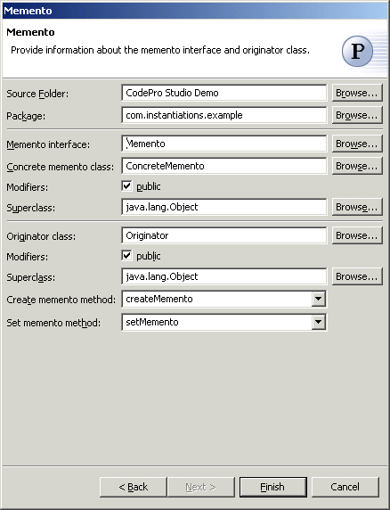

Memento Pattern
Also known as: Token
Without violating encapsulation, the  Memento Pattern captures and externalizes an object's internal state so that
the object can be restored to this state later. Sometimes it's necessary to
record the internal state of an object. This is required when implementing
checkpoints and undo mechanisms that let users back out of tentative
operations or recover from errors. You must save state information somewhere
so that you can restore objects to their previous states. But objects
normally encapsulate some or all of their state, making it inaccessible to
other objects and impossible to save externally. Exposing this state would
violate encapsulation, which can compromise the application's reliability
and extensibility.
Memento Pattern captures and externalizes an object's internal state so that
the object can be restored to this state later. Sometimes it's necessary to
record the internal state of an object. This is required when implementing
checkpoints and undo mechanisms that let users back out of tentative
operations or recover from errors. You must save state information somewhere
so that you can restore objects to their previous states. But objects
normally encapsulate some or all of their state, making it inaccessible to
other objects and impossible to save externally. Exposing this state would
violate encapsulation, which can compromise the application's reliability
and extensibility.
Wizard

| Option | Description | Default |
| Source folder | Enter a source folder for the new class. Either type a valid source folder path or click Browse to select a source folder via a dialog. | The source folder of the element that was selected when the wizard was started. |
| Package | Enter a package to contain the new class. Either type a valid package name or click Browse to select a package via a dialog. | The package of the element that was selected when the wizard has been started. |
| Memento interface | Type or click Browse to select the memento interface. | <Memento> |
| Concrete memento class | Type or click Browse to select the concrete memento class. | <ConcreteMemento> |
| Modifiers | Select one or more access modifiers for the new class.
|
public |
| Superclass | Type or click Browse to select a superclass for this class. | <java.lang.Object> |
| Originator class | Type or click Browse to select the originator class. | <Originator> |
| Modifiers | Select one or more access modifiers for the new class.
|
public |
| Superclass | Type or click Browse to select a superclass for this class. | <java.lang.Object> |
| Create memento method | Type or select the name of the method that will create the memento instance | <createMemento> |
| Set memento method | Type or select the name of the method that will extract the state from the memento instance | <setMemento> |
Applicability
Use the Memento pattern when
- a snapshot of (some portion of) an object's state must be saved so that it can be restored to that state later, and
- a direct interface to obtaining the state would expose implementation details and break the object's encapsulation.
Additional Resources
http://c2.com/cgi/wiki?MementoPattern
http://www.wikipedia.org/wiki/Memento_pattern